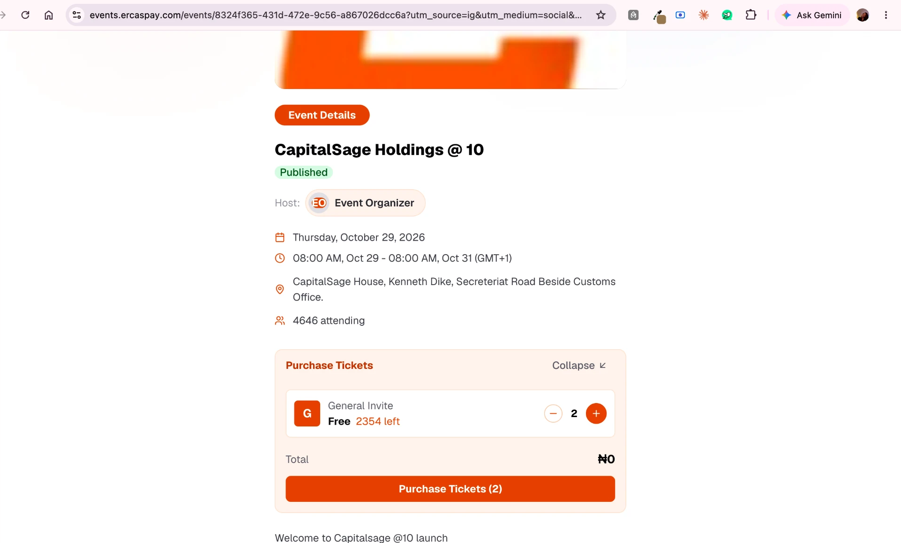
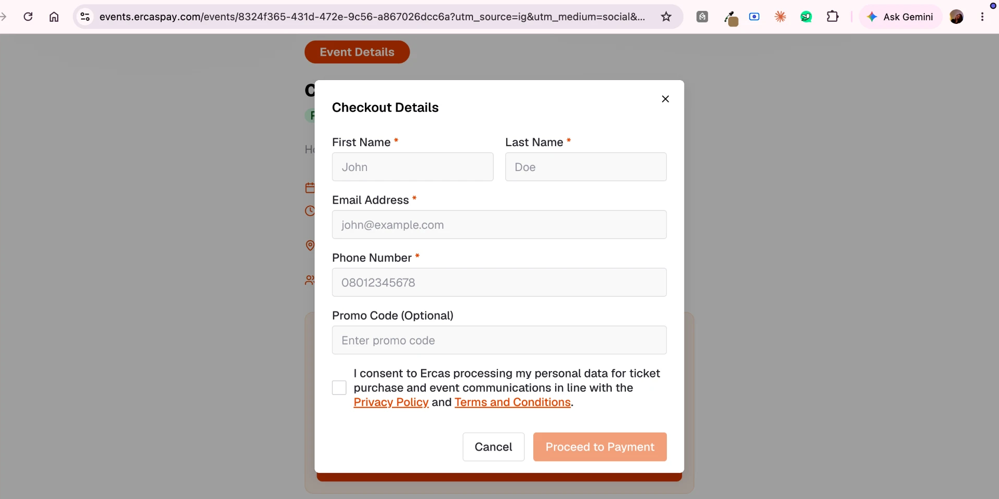
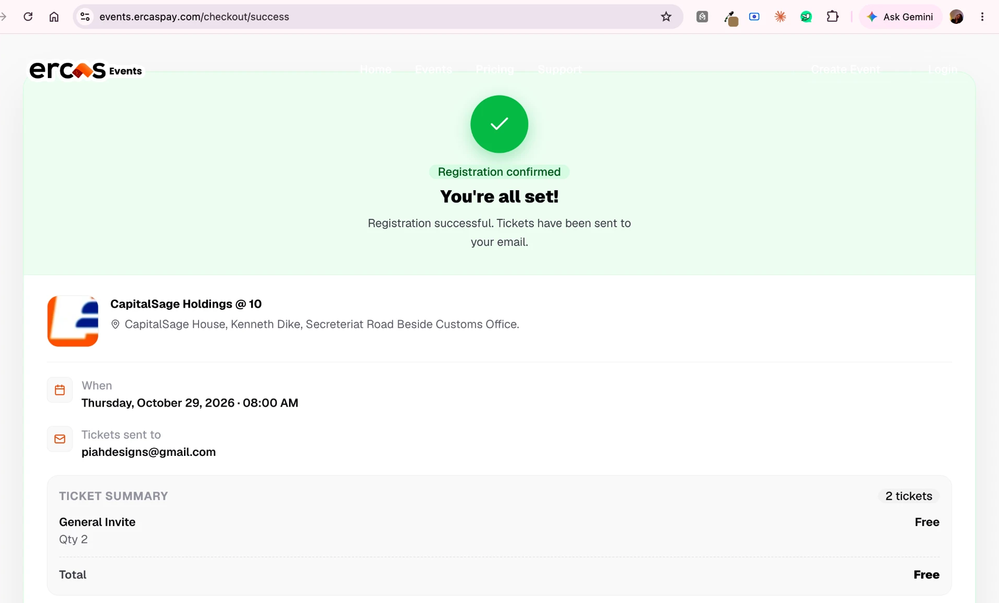

A note to Ercas Events
Two tickets.
One name.
A friend and I were going to CapitalSage Holdings @ 10, at the new house on Kenneth Dike. I got two tickets, one for each of us. They both came back with my name on them.
This is the flow.



At first I thought I had made a mistake.
I assumed somewhere in there was a field for my friend's name and I had clicked straight past it. So I went back and did the whole thing again, slowly this time, watching for it.
There is no such field. The flow asks how many, takes the buyer's details at checkout, and prints that name on every ticket it issues.
That is when it stopped being my mistake and started being an interesting one. There is only one person in the whole booking, and it is the one paying. A ticket is not a quantity. It is a claim on a seat by a named person. The moment I asked for two, the product had two seats and still only one name to put on them.
My friend would have turned up at Kenneth Dike holding a ticket with my name on it.
Then I wondered whether it mattered to anyone but me.
It does. I went back and read what your homepage promises, and three of the things you sell there are quietly undone by this.
Export attendee lists on demand.
You are exporting a buyer list and calling it an attendee list. That is literally what the product stores: my checkout details, copied onto every ticket. My booking of two produced one name. An organiser planning catering, seating, badges or follow-up is working from numbers that are wrong before they open the file.
Track sales, revenue, and check-ins in real time.
Unique attendees cannot be counted when several tickets collapse onto one identity. Sales and revenue stay accurate. Everything about who turned up does not.
Keep lines moving with seamless QR code scans at the gate.
At the door my name scans twice. Either the second person walks in unverified, or they get stopped, and the queue your mobile scanner exists to prevent forms anyway.
Two friends at an anniversary is the small version of this. A company booking twelve seats for its staff is the version that costs an organiser something, and you with it.
I would not fix this at checkout.
That is the obvious answer, and I think it is the wrong one. Checkout is where someone is already deciding whether this is worth the trouble. Putting more fields in front of them there buys you a cleaner attendee list and costs you bookings, which is a bad trade for an events business.
The question I would ask first is one the product never asks at all: how do people actually get into this event?
Some events check names at the door, and for those the name on the ticket is the entire point. Others scan a QR code and never look at a name, and for those I am not convinced the name belongs on the ticket at all. There is a better place for it.
Once you know which kind of event you are selling for, it stops being a question of adding a field and becomes a question of where in the flow the product should be asking. That place is earlier than checkout, and it is already on screen.
I have a specific view on where, and on what each mode of entry should do differently. That is a conversation rather than a document.
Three numbers I would want before changing anything.
- What share of bookings are for more than one ticket, and the size distribution.
- Current checkout completion, so any added field can be held against it.
- How often anyone asks support to change a name after booking. That volume is the clearest measure of what this costs you today.
If this is something you are building, I would like to help build it.
I could have sorted mine out at the gate, and most people would have. But I design products for a living and ticketing is familiar ground for me, so rather than be annoyed by it I went looking for where the model had gone wrong.
The part I care about is what a product decides to store, not only what it shows. If Ercas Events is a product you are actively investing in, I would love to be part of building it. If not, I hope these notes are useful anyway.
Oludolapo Bodede
Also noticed
Two other things I ran into on the way.
The Ercas Events link in the ErcasPay footer points to ercas-events.com, which has no DNS record. Anyone arriving from the parent product lands on nothing.
ercasevents.com never finishes loading its events. The page sits on "Loading events" and nothing ever appears. The same listing works fine on events.ercaspay.com, so one of your two addresses shows an empty catalogue to whoever finds it.